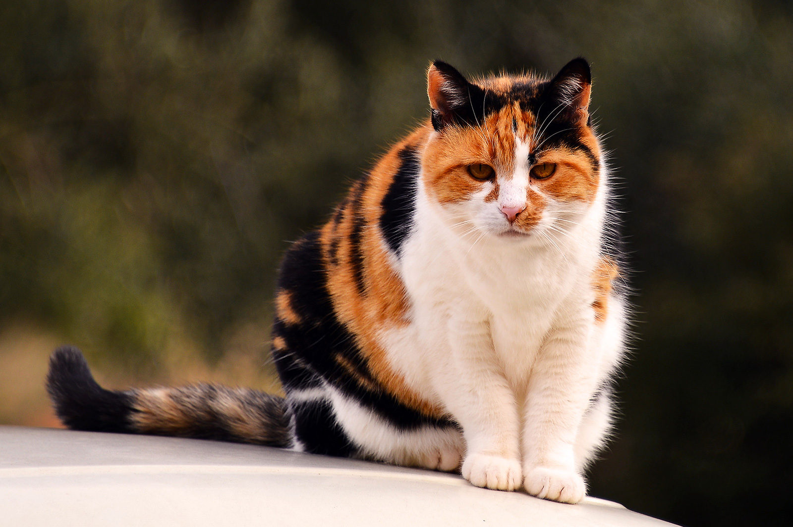
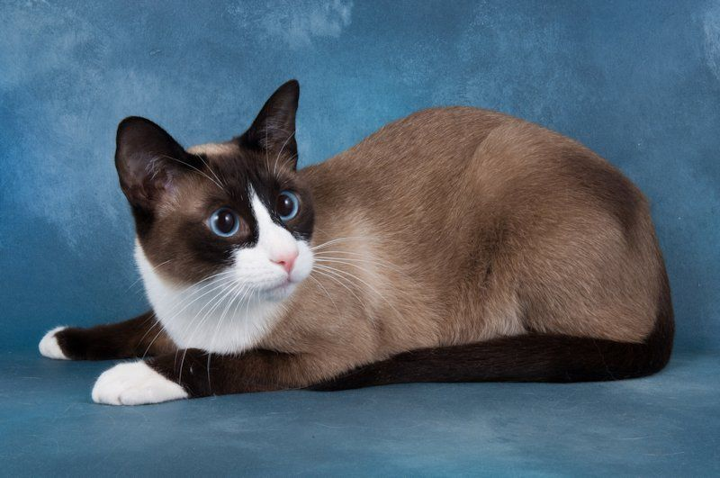

CAT CATEGORIES
--Choice Your Pet--
polydactyl
Let’s be real, polydactyl cats give the best high-fives. Errr, high-sixes. Also known as "mitten cats" or "thumb cats," polydactyls have a genetic mutation that gives them more than the usual number of toes on one or more feet. Polydactyl cats can have anywhere from six to eight toes per paw. The extra toes sometimes make them look like their paws have thumbs. While polydactyly can happen in many different animals (including humans), it’s arguably cutest in cats. Writer Ernest Hemingway certainly thought so—he himself was a polydactyl owner, and the Ernest Hemingway Home and Museum is now home to some 50 polydactyl cats.
Snowshoe
With its white muzzle and feet, dark "points," and blue eyes, the Snowshoe looks like what it was bred from: a Siamese with white "boots" that turned up in the litter of a Siamese breeder in Philadelphia in the 1960s. The particular Snowshoe look is difficult to breed, so registered purebred Snowshoe cats are rare. But there are many cats in shelters who have some or all of its traits, such as the white paws, dark mask, and beautiful blue eyes—so if you’re interested in this kind of cat, you can always get "the look for less."
Calico

It is impossible to clone a calico cat with the same markings, because of the random activation of genes. The necessary traits for calico patterning are on the X-chromosome, therefore nearly all calico cats are female. Male calico cats are few and far between, and can only exist as a result of genetic defect.
British Shorthair
The British Shorthair is known for both its looks and its typically easygoing and fun-loving personality. The appealing chunkiness of its face and body and its plush, thick fur match its sturdy temperament. The wide-cheeked faces of British Shorthairs appear to be smiling and more expressive than many cat breeds’, and it’s said that they were the inspiration for the wide-grinning Cheshire Cat of Lewis Carroll’s Alice’s Adventures in Wonderland. British Shorthairs are reputed to be doglike in their readiness for fun and games, such as fetching.
Siamese

Who can resist the Siamese cat’s pretty blue eyes? These cats have been valued for their unique patterning and outspoken personalities for centuries. Long a status symbol, Siamese cats have been given to dignitaries as gifts. They made their U.S. debut in 1878 when one was given to President Rutherford B. Hayes and his wife by an American consul. These cats are especially known as being very vocal—their loud meows are sometimes mistaken for babies crying! Popular since the 19th century, this breed of cat originated in Thailand (formerly known as Siam). The Siamese has helped create many other breeds, including the Oriental Shorthair, Sphynx, and Himalayan. Siamese cats have distinct markings called "points" that are the areas of coloration on their face, ears, feet, and tail, but some Siamese may not have any points. There are also two varieties of Siamese cats, one with an "apple" shaped head and chubbier body and one with a larger head and slender body.
Japanese Bobtail
Japanese Bobtails are like cats on the front end and rabbits on the back end. Just let that sink in for a minute. It’s almost too cute to handle. Kitties with bunny tails? Sign me up. These adorable critters are native to Japan, and have been around long enough to score appearances in traditional art. Unlike most dogs with "docked" tails, Japanese Bobtails come by their stubby tails naturally. The genetic mutation that causes the tail reduces the number of vertebrae present. And did I mention they like to play fetch?